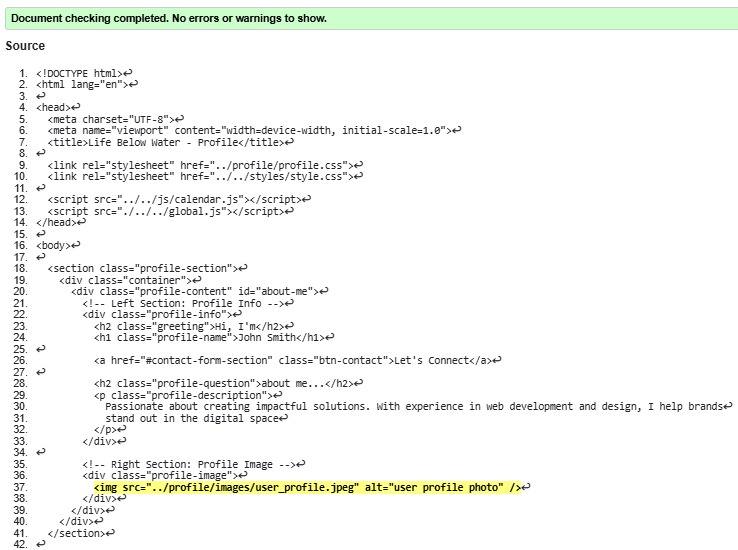
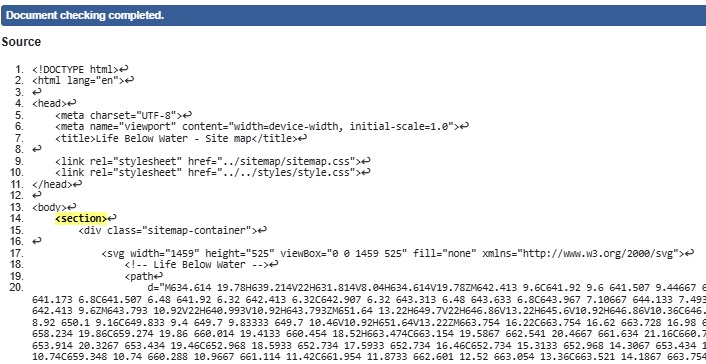

Profile Page validation report
On the profile page, I made sure the data entered by users was correct and that the system handled mistakes gracefully. I checked the name, email, and phone number fields to see if they were formatted correctly, using built-in web features (like required, pattern, and type) to help users avoid errors. I also checked that the calendar looked and worked properly on different devices, making it accessible and easy to use for everyone.
Back to Page Editor page
Sitemap validation report
For the Site Map Page, I checked the structure of my SVG design, ensuring all links were functional and correctly mapped to their respective pages. I validated the SVG syntax to confirm compliance with web standards, ensuring the visual elements rendered properly across browsers. This step was crucial in maintaining a clear and organized site structure.
Back to Page Editor page
Content Page validation report
I checked the 'Sustainable Fishing' webpage to make sure it was well-designed and easy to use. Specifically, I:
- Made sure the text was easy to read.
- Confirmed the images adjusted properly to different screen sizes (e.g., mobile phones).
- Used the correct HTML code to structure the content in a meaningful way (for example, using heading tags correctly).
- Added descriptions (alt text) to all images so people using screen readers could understand them.
- Tested all the links on the page to make sure they worked and went to the right places.